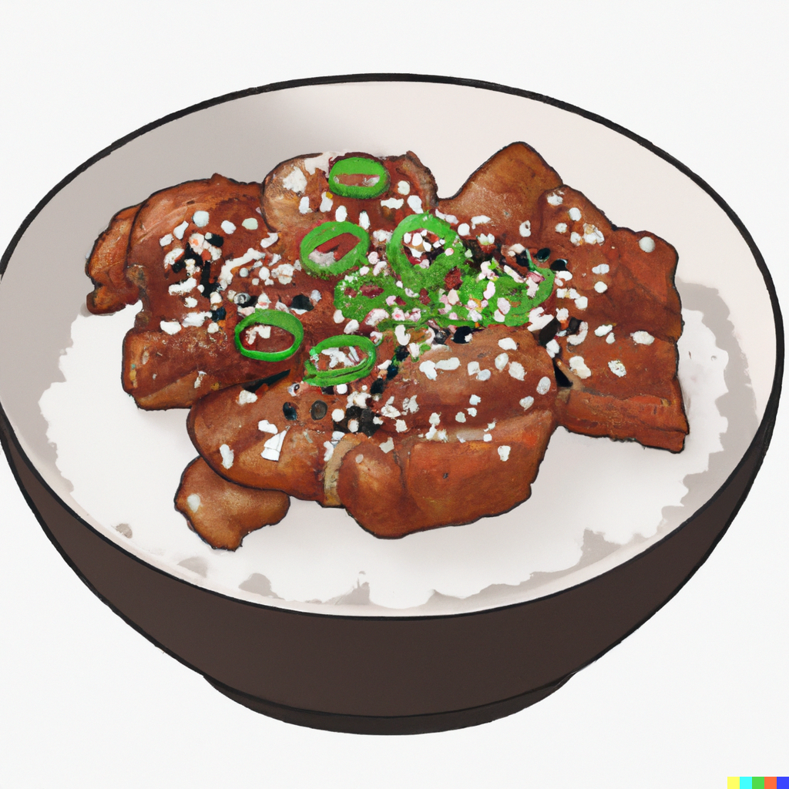

Teriyaki Chicken

Description
Easy Teriyaki Chicken made Gluten Free.
Ingredients
- 1 Tbs cornstarch
- 2 green onions, thinly sliced
- 1" chunk of ginger, minced
- 5 garlic cloves, minced
- 1/2 cup tamari or Gluten Free soy sauce
- 1/4 cup (packed) dark brown sugar
- 1 Tbs apple cider vinegar
- 3 Tbs olive oil
- 8 oz crimini mushrooms
- 1.5 lbs skinless, boneless chicken thighs, cut into bite-sized strips
- salt & pepper
- toasted sesame seeds
Steps
- Make a slurry by whisking 1 Tbs cornstarch and 1/3 cup water.
- Create teriyaki sauce by mixing scallions, ginger, garlic, tamari or soy sauce, dark brown sugar, and apple cider vinegar. Set aside.
- Heat 1 Tbs olive oil and cook the crimini mushrooms until soft, about 5 mins. Remove from pan and set aside.
- Heat 2 Tbs olive oil and cook the chicken, seasoning with salt & pepper, about 3 mins then turn and cook another 1-2 mins until done. Remove from pan and set aside.
- Pour teriyaki sauce into pan and bring to a boil while scraping any browned bits. Add the slurry and cook while stirring about 3-5 mins until sauce is thick.
- Remove from heat and add the chicken and mushrooms into the sauce. Top with toasted sesame seeds & green onion and serve over rice.